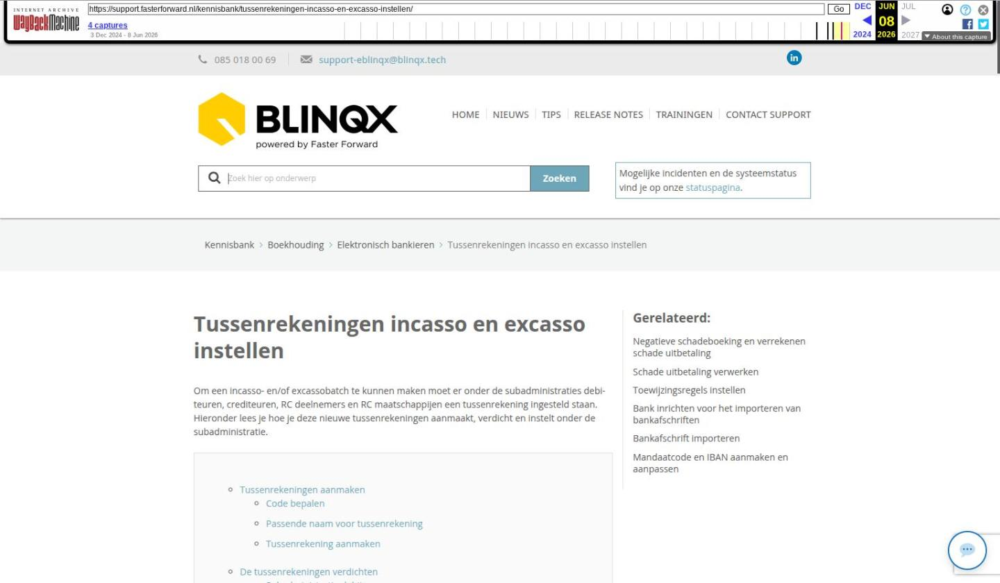

Tussenrekeningen incasso en excasso instellen

Tekstinhoud
Tussenrekeningen incasso en excasso instellen
Om een incasso- en/of excassobatch te kunnen maken moet er onder de subadministraties debiteuren, crediteuren, RC deelnemers en RC maatschappijen een tussenrekening ingesteld staan. Hieronder lees je hoe je deze nieuwe tussenrekeningen aanmaakt, verdicht en instelt onder de subadministratie.
Tussenrekeningen aanmaken
Code bepalen
Passende naam voor tussenrekening
Tussenrekening aanmaken
De tussenrekeningen verdichten
Subadministratie debiteuren
Subadministratie rekening-courant maatschappijen
Subadministratie crediteuren
Subadministratie Rekening-courant deelnemers
Tussenrekening instellen onder subadministratie
Tussenrekeningen aanmaken
Let op: wanneer je in jouw omgeving gebruik maakt van meerdere administraties dan dien je deze tussenrekeningen per administratie aan te maken, te verdichten en in te stellen.
Let op: voor de subadministratie Rekening-Courant Maatschappijen gebruik je niet de bestaande 1230 Tussenrekening maatschappijen. Je dient echt een nieuwe tussenrekening specifiek voor het uitbetalen aan te maken.
Let op: de tussenrekening uitbetalen RC deelnemers gebruik je alleen als je als CO een financiële afwikkeling hebt met jouw deelnemers. Is dit niet het geval dan hoef je deze niet te controleren en/of aan te maken. Het kan zijn dat de tussenrekening uitbetalen RC deelnemers al bestaat. Deze hoef je dan niet opnieuw aan te maken en deze staat dan al automatisch ingesteld als tussenrekening onder de subadministratie RC deelnemers.
Om de tussenrekeningen aan te maken ga je naar Financieel – Rekeningschema onderhoud. Hier filter je de rekeningen op 'Balans'.
Code bepalen
Per subadministratie bekijk je welke code logisch is om mee te geven aan de tussenrekening. Let op: de code mag niet al in gebruik zijn. Volgens het rekeningschema vallen tussenrekeningen onder de rubriek 2. Het is logisch om de tussenrekening dan met een 2 te laten beginnen. Zo zijn in onderstaand voorbeeld de codes 2000, 2010 al bezet.
Een optie is dan 2030 voor Tussenrekening incasseren en betalen debiteuren en bijvoorbeeld 2031 voor Tussenrekening betalen crediteuren. Zo bepaal je in jouw eigen administratie per tussenrekening welke code geschikt is.
Passende naam voor tussenrekening
Wanneer je een nieuwe tussenrekening aanmaakt, moet je deze ook een omschrijving/naam geven. Passende omschrijvingen, per subadministratie, zijn:
Tussenrekening betalen crediteuren
Tussenrekening incasseren en betalen debiteuren
Tussenrekening incasseren en uitbetalen RC deelnemers
Tussenrekening uitbetalen RC maatschappijen
Tussenrekening aanmaken
Om de tussenrekening aan te maken klik je op het plusicoon. Bij 'Code' vul je de gekozen code in. Bij 'Omschrijving' geef je de tussenrekening een passende naam (zie hierboven). De instellingen stel je als volgt in (let op de code en naam verschilt per subadministratie):
De subadministratie zet je op 'Geen'.
De tussenrekeningen verdichten
De nieuw aangemaakte tussenrekeningen moeten verdicht worden. Voor het verdichten ga je naar Financieel – Verdichtingen onderhoud. Je komt uit op het tabblad Balans. Je verdicht de tussenrekening op het niveau waar de originele grootboekrekening ook staat. Hieronder zie je voorbeelden. Let op: dit kan voor jouw administratie anders zijn.
Subadministratie debiteuren
Je klikt hier de map Vlottende activa open. Vervolgens klik je de map Vorderingen openen. Hier klik je Debiteuren aan.
Rechts staan de beschikbare grootboekrekeningen die nog verdicht moeten worden. Hier klik je op het blauwe pijltje achter de juiste tussenrekening om deze toe te voegen aan de map.
Subadministratie rekening-courant maatschappijen
Ook deze staat in de map Vlottende activa – Vorderingen, maar dan in Overige vorderingen en overlopende activa
Rechts staan weer de beschikbare rekeningen. Hier klik je op het pijltje achter de tussenrekening Tussenrekening uitbetalen RC maatschappijen.
Subadministratie crediteuren
Deze staat in de de map Passiva – Kortlopende schulden – Crediteuren.
Rechts staan weer de beschikbare rekeningen. Hier klik je op het pijltje achter de tussenrekening Tussenrekening betalen crediteuren.
Subadministratie Rekening-courant deelnemers
Wanneer je hiervan al gebruikt maakt, is de tussenrekening al aanwezig en ook verdicht. Voor de volledigheid staat hier waar deze verdicht moet zijn. Ook deze staat in de map Passiva – Kortlopende schulden – Overige schulden en overlopende passiva.
Tussenrekening instellen onder subadministratie
De aangemaakte tussenrekening moet ingesteld worden onder de subadministratie. Staat deze niet ingesteld dan is het niet mogelijk om een incasso- of excassobestand aan te maken. Voor het instellen ga je naar Financieel – Rekeningschema onderhoud. Hier zoek je de subadministraties op, bijvoorbeeld 1200 Debiteuren. Je klikt op het wijzigingsicoon achter de betreffende rekening. Onder het veld 'Subadministratie' staat een extra veld 'Tussenrekening' waar je de juiste tussenrekening in kan stellen. Deze stappen neem je per subadministratie.
Laatste update: 15 oktober 2025
Was deze informatie nuttig?
Ja Nee